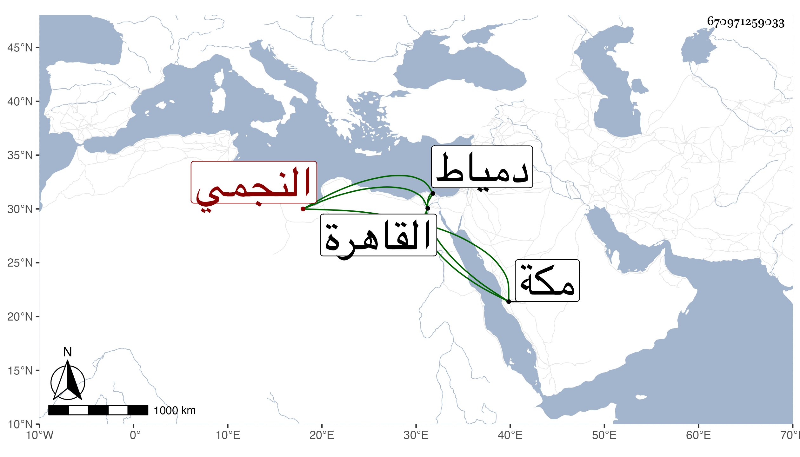

0902Sakhawi.DawLamic.ITO20230111-ara1.EIS1600.670971259033
Biography ID: 670971259033
593
محمد ناصر الدين بن الأمير دولات باي النجمي . له ذكر في أبيه وأنه كان في سنة إحدى وثمانين مميزا ، ومولده سنة إحدى وسبعين بدمياط ثم عرض علي بعد ذلك عدة كتب في نوبتين وهي العمدة والكنز وألفية النحو والجرومية في آخرين ، ولازم الديمي فقرأ عليه البخاري والشفا والعمدة وأربعي النووي والحصن الحصين لابن الجزري بل قرأ على الصلاح الطرابلسي الكنز وشرحه للعيني بحثا وعلى البدر بن الديري الكنز مع شرح المختار لمؤلفه ، ولازم نور الدين المحلي في النحو وأخذ عنه عدة كتب وتلا للسبع إفرادا وجمعا على الزيني جعفر وأجازوا له، وتميز وكتب الخط المنسوب مع أدب وعقل وديانة ، وقد تردد لي في القاهرة وكتب بعض تصانيفي ثم لازمني بمكة في سنة سبع وتسعين حين مجاورتنا وقرأ عليه صحيح مسلم وباقي الكتب الستة وسمع على سيرة ابن هشام وغيرها وحصل شرح التقريب وبحث بعضه ، وكان على خير وانجماع مع فضيلة ثم جاور السنة التي تليها ونعم الفاضل كان الله له .
